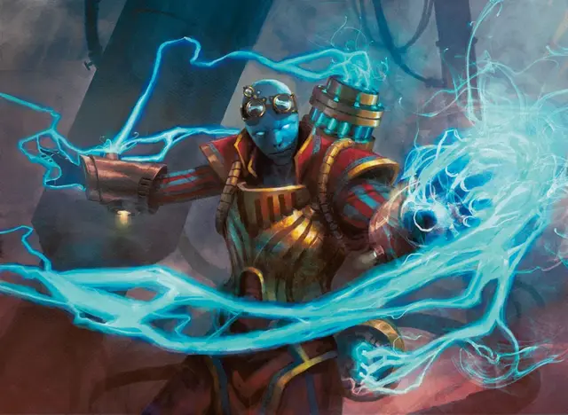

Противоточный взрывоискатель
Counterflux Blastseeker
Средний Гуманоид (Любая раса), хаотично-нейтральный

Класс Доспеха 13 (16 с доспехом мага)
Хиты 39 (6к8 + 12)
Скорость 30 футов
| мод | спас | ||
|---|---|---|---|
| СИЛ | 13 | +1 | +1 |
| ЛОВ | 16 | +3 | +3 |
| ТЕЛ | 15 | +2 | +4 |
| мод | спас | ||
|---|---|---|---|
| ИНТ | 18 | +4 | +4 |
| МДР | 11 | +0 | +2 |
| ХАР | 14 | +2 | +2 |
Навыки Восприятие +2, Магия +6
Чувства пассивное Восприятие 12
Языки Общий плюс один другой язык
Опасность 2 (450 опыта)
Бонус мастерства +2
Особенности
Противопотоковая облачность (перезарядка 5–6). Взрывоискатель может создать дополнительный эффект сразу после накладывания заклинания. Бросьте 1к6, чтобы определить эффект:
• 1–3. Взрывоискатель создает невидимую сферу радиусом 15 футов с центром на себе, которая существует до конца его следующего хода. Существа в сфере совершают с помехой спасброски от заклинаний и других магических эффектов.
• 4–6. Взрывоискатель создает невидимую сферу радиусом 15 футов с центром на себе, которая существует до конца своего следующего хода. Существа в сфере совершают с преимуществом спасброски от заклинаний и других магических эффектов.
Врожденное колдовство. Базовой характеристикой взрывоискателя является Интеллект (Сл спасброска от заклинаний 14, +6 к попаданию атаками заклинаниями). Взрывоискатель может накладывать заклинания, не нуждаясь в материальных компонентах, кроме своего снаряжения Иззетов, которое не работает для других:
• 3/день каждое: увеличение/уменьшение [enlarge/reduce], доспехи мага [mage armor] (только на себя), палящий луч [scorching ray];
• 1/день каждое: контрзаклинание [counterspell], рассеивание магии [dispel magic], защита от энергии [protection from energy].
Действия
Рапира. . Рукопашная атака оружием: +5 к попаданию, досягаемость 5 фт., одна цель. Попадание: 7 (1к8 + 3) колющего урона.
Описание
В то время как химики сосредотачиваются на изобретении новых инструментов, оружия и других устройств для использования гильдией, роль искателя взрыва состоит в том, чтобы заставить эти устройства работать. Несмотря на название, не все такие устройства производят взрывы, но все самые интересные (с точки зрения Иззетов) производят.